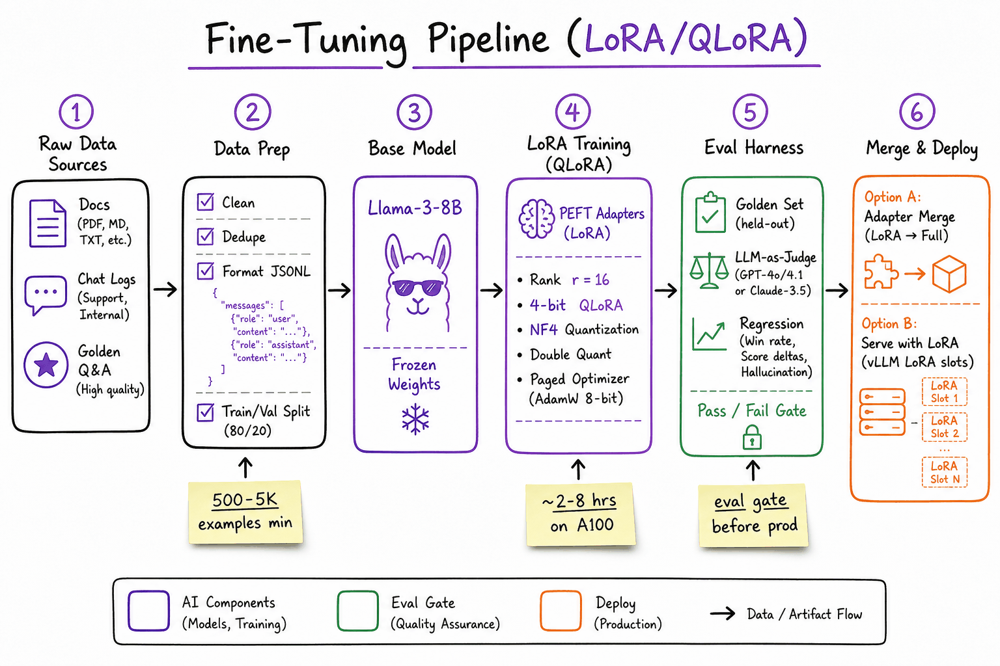
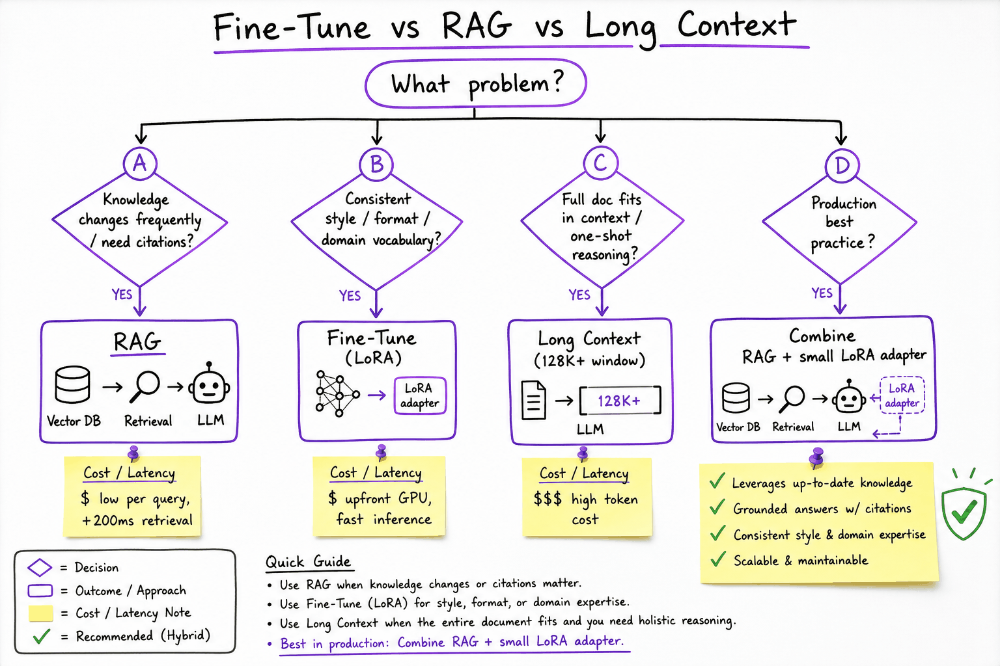
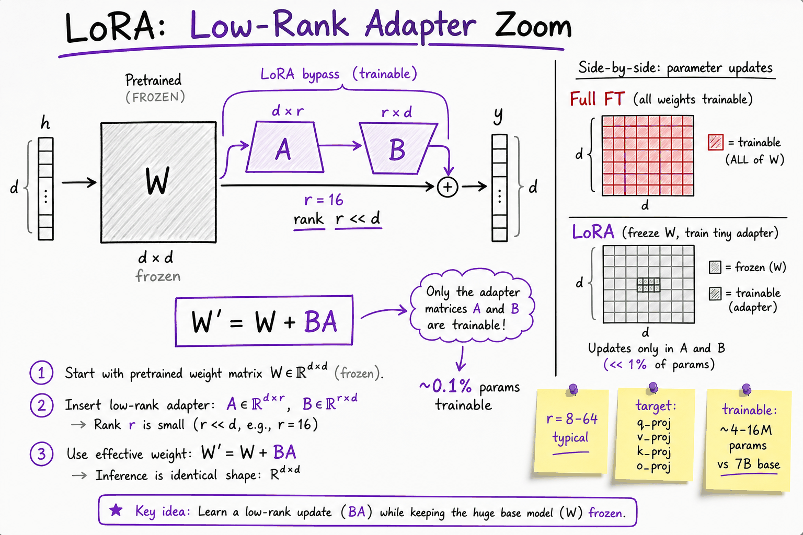

Fine-tuning, LoRA & QLoRA // Fine-tuning & alignment
When to fine-tune, the LoRA math, a working QLoRA recipe, data, hyperparameters, evaluation and serving.
01 — At a glance
When to fine-tune vs RAG vs long context, LoRA/QLoRA mechanics, PEFT parameter budgets, dataset sizing, eval gates before deploy, and HuggingFace / Axolotl training patterns — the production path from base model to served adapter.

End-to-end fine-tuning pipeline: raw data → JSONL prep → frozen base model + LoRA adapters → eval harness gate → merge or vLLM LoRA slots for production serving.
Quick reference
02 — What & Why
Problem
Base LLMs are generalists. Production apps need consistent tone, domain vocabulary, structured output formats, or task-specific behavior that prompting alone cannot reliably achieve. Full fine-tuning updates all 7B+ parameters — expensive, slow, and risks catastrophic forgetting. LoRA/QLoRA trains tiny adapter matrices (~0.1–1% of params) while keeping the base frozen.
Functional Requirements
- Adapt a base model to a specific task (classification, extraction, chat style, tool-use format)
- Train on custom JSONL / chat-format datasets with train/val split
- Support multiple adapter versions per base model (A/B, per-tenant)
- Eval gate: no deploy without passing golden-set regression
- Merge adapter into base weights OR serve dynamically via vLLM LoRA slots
Non-Functional Requirements
- Cost: QLoRA on 1× A100 for 7B model, ~2–8 hrs for 1K–10K examples
- Storage: adapter checkpoint ~50–200 MB vs full model ~14 GB (fp16 7B)
- Latency: merged model = same as base; dynamic LoRA adds ~5–15% overhead
- Reproducibility: pinned base model hash, dataset version, hyperparams in config YAML
- Safety: eval for hallucination regression, PII leakage, jailbreak resistance
Position in the stack: Fine-tuning sits after How LLMs are trained and alongside The RAG pipeline. Most production systems use RAG for knowledge + a small LoRA adapter for style/format. See How LLMs are trained for where SFT fits in the alignment stack.
03 — Core Concepts
| Term | Definition | Gotcha |
|---|---|---|
| LoRA | Low-Rank Adaptation: inject trainable rank-r matrices A, B into frozen weight W. Update: W′ = W + BA. | Higher rank ≠ always better; r=16–64 is the sweet spot for most tasks. |
| QLoRA | LoRA + 4-bit NF4 quantized base weights (via bitsandbytes). Trains adapters on consumer/single-GPU hardware. | Quantization adds ~1–3% quality loss vs fp16 LoRA; acceptable for most domain tasks. |
| PEFT | Parameter-Efficient Fine-Tuning umbrella: LoRA, Prefix Tuning, IA³, AdaLoRA, DoRA. | LoRA dominates production; others are research/niche. |
| Rank (r) | Inner dimension of LoRA matrices. Controls adapter capacity vs param count. | r=8 for simple format tasks; r=32–64 for complex domain reasoning. |
| Target modules | Which layers get adapters: typically q_proj, k_proj, v_proj, o_proj in attention + MLP. | More modules = more params but diminishing returns beyond attention layers. |
| Adapter merge | Bake LoRA weights into base: W_merged = W + BA. Single checkpoint, no runtime overhead. | Cannot hot-swap adapters after merge; need separate checkpoints per variant. |
| Dynamic LoRA | vLLM/TGI serves base + multiple adapter slots loaded at runtime. | Memory: each slot ~50–200 MB; limit 4–8 concurrent adapters per GPU. |
| SFT | Supervised Fine-Tuning on instruction/response pairs. LoRA is the efficient implementation of SFT. | Don't confuse with RLHF/DPO — those need preference pairs. See How LLMs are trained. |
| Catastrophic forgetting | Full FT destroys general capabilities. LoRA mitigates by keeping base frozen. | Still possible with high LR or too many epochs — always eval general tasks. |
| Training/serving skew | Train format differs from inference prompt template. | #1 production bug: use identical chat template (ChatML, Llama-3) in train and serve. |
04 — API / Interface Surface
HuggingFace PEFT — load & train
from peft import LoraConfig, get_peft_model, PeftModel
from transformers import AutoModelForCausalLM, AutoTokenizer, TrainingArguments, Trainer
import torch
BASE = "meta-llama/Llama-3.1-8B-Instruct"
tokenizer = AutoTokenizer.from_pretrained(BASE)
model = AutoModelForCausalLM.from_pretrained(
BASE,
torch_dtype=torch.bfloat16,
device_map="auto",
load_in_4bit=True, # QLoRA
bnb_4bit_compute_dtype=torch.bfloat16,
)
lora_config = LoraConfig(
r=16,
lora_alpha=32, # scaling = alpha / r
target_modules=["q_proj", "k_proj", "v_proj", "o_proj"],
lora_dropout=0.05,
bias="none",
task_type="CAUSAL_LM",
)
model = get_peft_model(model, lora_config)
model.print_trainable_parameters()
# trainable params: ~4.2M || all params: 8.0B || trainable%: 0.05%
Axolotl YAML config (production pattern)
# axolotl_config.yaml
base_model: meta-llama/Llama-3.1-8B-Instruct
model_type: LlamaForCausalLM
load_in_4bit: true
adapter: lora
lora_r: 16
lora_alpha: 32
lora_target_modules:
- q_proj
- v_proj
- k_proj
- o_proj
- gate_proj
- up_proj
- down_proj
datasets:
- path: data/train.jsonl
type: chat_template
chat_template: llama3
field_messages: messages
val_set_size: 0.05
sequence_len: 4096
micro_batch_size: 2
gradient_accumulation_steps: 8
num_epochs: 3
learning_rate: 2.0e-4
lr_scheduler: cosine
warmup_ratio: 0.03
bf16: true
gradient_checkpointing: true
evals_per_epoch: 2
saves_per_epoch: 1
output_dir: ./outputs/lora-v1
# Train: axolotl train axolotl_config.yaml # Merge: python -m axolotl.cli.merge_lora axolotl_config.yaml ./outputs/lora-v1
Serve merged or dynamic LoRA (vLLM)
# Merged model — standard vLLM serve
# vllm serve ./merged-model --dtype bfloat16
# Dynamic LoRA slots — see model-serving-vllm.html
from vllm import LLM
llm = LLM(
model="meta-llama/Llama-3.1-8B-Instruct",
enable_lora=True,
max_lora_rank=64,
max_loras=4,
)
# Load adapter at request time via lora_request param
Full serving patterns (batching, KV cache, multi-LoRA slots) in Serving & scaling.
05 — When to Use / When NOT

Decision flow: knowledge freshness and citation needs → RAG; style/format/vocabulary → LoRA; full-doc reasoning in one shot → long context; production default → RAG + small LoRA.
| Approach | Use When | Don't Use When | Cost Profile |
|---|---|---|---|
| RAG | Knowledge changes frequently; need citations; large doc corpus; zero training budget | Need consistent output format/style; task is pure reasoning without external docs | Low upfront; +$0.001–0.01/query (embed + retrieve); +100–300ms latency |
| LoRA fine-tune | Consistent tone/format; domain vocabulary; structured extraction; tool-call JSON schema adherence | Knowledge base changes daily; <500 quality examples; general capability improvement needed | Upfront: $20–200 GPU hrs; inference same as base model |
| Long context (128K+) | Full document fits once; complex cross-doc reasoning; no retrieval infra | Corpus > context window; cost-sensitive high-QPS; need fresh data without re-index | $$$ per query: 128K tokens × $0.003/1K = ~$0.40/query |
| RAG + LoRA (hybrid) | Production default: RAG for knowledge, LoRA for style/format/reasoning template | Simple FAQ bot with static answers (RAG alone suffices) | Best ROI for enterprise chatbots |
| Full fine-tune | Fundamental capability shift; have 100K+ examples and multi-GPU budget | Most product teams — LoRA achieves 90% of quality at 1% of cost | $$$$: all params × all steps |
Rule of thumb: Try prompt engineering first → RAG if knowledge gap → LoRA if format/style gap persists → long context only if single-doc reasoning and budget allows. Never fine-tune to inject facts that belong in a vector store.
06 — Architecture
Raw Sources (docs, chat logs, golden Q&A)
|
v
+------------------+
| Data Pipeline | clean, dedupe, PII scrub, format JSONL
| train/val split | chat template (ChatML / Llama-3)
+--------+---------+
|
v
+------------------+ frozen weights (4-bit NF4)
| Base Model |<---- meta-llama/Llama-3.1-8B-Instruct
| + LoRA adapters | trainable: q/k/v/o_proj (+ optional MLP)
+--------+---------+
| 2-8 hrs on A100, 3 epochs
v
+------------------+
| Eval Harness | golden set regression, LLM-as-judge,
| (gate) | format compliance, safety checks
+--------+---------+
| pass threshold (e.g. >92% golden accuracy)
v
+----+----+
| |
v v
Merge Dynamic LoRA
(single (vLLM multi-slot)
ckpt) |
| |
v v
+------------------+
| Inference | vLLM / TGI / Ollama
| + optional RAG | see rag-end-to-end.html
+------------------+
{"messages": [{"role":"user","content":"..."},{"role":"assistant","content":"..."}]}. Dedupe via MinHash; scrub PII.07 — LoRA & QLoRA Deep Dive

LoRA injects low-rank matrices A (d×r) and B (r×d) alongside frozen weight W. Only BA is trained; effective update W′ = W + (alpha/r)·BA.
Hyperparameter guide
| Param | Typical Range | Notes |
|---|---|---|
r (rank) | 8 – 64 | Start r=16. Increase if underfitting on val set. |
lora_alpha | 2×r (e.g. 32 for r=16) | Scaling factor. alpha/r controls adapter magnitude. |
lora_dropout | 0.05 – 0.1 | Regularization. Higher if small dataset (<1K). |
learning_rate | 1e-4 – 3e-4 | LoRA tolerates higher LR than full FT. Use cosine + warmup. |
epochs | 1 – 5 | Watch val loss — 3 epochs is common; stop early on overfit. |
sequence_len | 2048 – 8192 | Match expected inference context. Longer = more VRAM. |
batch_size | micro=1–4, accum=4–16 | Effective batch 16–64. QLoRA 7B fits micro=2 on 24GB GPU. |
QLoRA vs fp16 LoRA
| QLoRA (4-bit) | fp16 LoRA | |
|---|---|---|
| VRAM (7B) | ~10–14 GB | ~20–28 GB |
| Quality | ~97–99% of fp16 LoRA | Baseline |
| Hardware | Single A10/A100/4090 | A100 40GB+ recommended |
| When | Default for most teams | Final quality pass or small models (<3B) |
08 — PEFT Methods Compared
| Method | Trainable Params | How | Production Use |
|---|---|---|---|
| LoRA | 0.05–1% | Low-rank matrices on selected layers | Default choice |
| QLoRA | 0.05–1% | LoRA + 4-bit quantized base | Default for single-GPU |
| DoRA | ~same as LoRA | Decomposed magnitude + direction | Emerging; slight quality boost over LoRA |
| Prefix Tuning | 0.1–3% | Learnable prefix tokens prepended to KV cache | Niche; inference overhead from longer prefix |
| IA³ | <0.01% | Learned vectors rescale activations | Very parameter-efficient; less flexible |
| Full FT | 100% | All weights updated | Only with 100K+ examples and multi-GPU |
Stick with LoRA/QLoRA unless you have evidence it underfits. DoRA is worth A/B testing if LoRA plateaus on val metrics.
09 — Dataset Requirements
Size guidelines
| Task Type | Min Examples | Recommended | Quality > Quantity |
|---|---|---|---|
| Output format / JSON schema | 200–500 | 500–2K | 10 perfect examples beat 1K noisy ones |
| Domain vocabulary / tone | 500–1K | 2K–10K | Include edge cases and negative examples |
| Complex reasoning / extraction | 1K–3K | 5K–20K | Human-reviewed; synthetic data needs validation |
| Multi-turn chat style | 500–2K | 3K–15K | Match production conversation patterns |
Data prep checklist
- Format: JSONL chat messages; identical template as inference (ChatML, Llama-3, etc.)
- Dedup: MinHash or exact hash on normalized text; remove near-duplicates (>0.9 cosine)
- PII scrub: regex + NER pass before training; audit for leakage in eval
- Train/val split: 90/10 or 95/5; stratify by task type if multi-task
- Balance: equal representation of task categories; oversample rare formats
- Negative examples: include "I don't know" and refusal patterns for safety
- Version control: DVC or W&B artifact versioning; never retrain on unversioned data
JSONL example
{"messages": [
{"role": "system", "content": "You are a medical billing assistant. Output JSON only."},
{"role": "user", "content": "Extract CPT code from: Patient underwent laparoscopic cholecystectomy."},
{"role": "assistant", "content": "{\"cpt_code\": \"47562\", \"confidence\": 0.95}"}
]}
10 — HuggingFace & Axolotl Training Patterns
HF Trainer loop (minimal)
from datasets import load_dataset
from trl import SFTTrainer, SFTConfig
dataset = load_dataset("json", data_files={"train": "train.jsonl", "val": "val.jsonl"})
training_args = SFTConfig(
output_dir="./outputs",
num_train_epochs=3,
per_device_train_batch_size=2,
gradient_accumulation_steps=8,
learning_rate=2e-4,
lr_scheduler_type="cosine",
warmup_ratio=0.03,
bf16=True,
logging_steps=10,
eval_strategy="steps",
eval_steps=100,
save_strategy="steps",
save_steps=200,
max_seq_length=4096,
dataset_text_field="messages",
packing=True, # pack short examples for throughput
)
trainer = SFTTrainer(
model=model,
args=training_args,
train_dataset=dataset["train"],
eval_dataset=dataset["val"],
processing_class=tokenizer,
)
trainer.train()
model.save_pretrained("./outputs/lora-final")
Multi-GPU with Accelerate / DeepSpeed
# accelerate config: multi-GPU, bf16 accelerate launch --num_processes 4 -m axolotl.cli.train axolotl_config.yaml # Or DeepSpeed ZeRO-2 for larger models (13B+) # deepspeed: configs/deepspeed_zero2.json in axolotl config
Axolotl vs raw HF
| Axolotl | Raw HF + PEFT | |
|---|---|---|
| Config | Single YAML — reproducible | Python script — flexible |
| Chat templates | Built-in (llama3, chatml, gemma) | Manual formatting |
| Packing | Automatic sample packing | Manual or via TRL |
| Multi-GPU | Accelerate/DeepSpeed integrated | Wire yourself |
| When | Production pipelines, team reproducibility | Research, custom loss functions |
11 — Eval Before Deploy
Never deploy a fine-tuned model without an eval gate. Fine-tuning can silently degrade general capabilities, introduce hallucination patterns, or leak training data.
Eval harness structure
Eval script sketch
import json
from evaluate import load
def run_golden_eval(model, tokenizer, golden_path: str, threshold: float = 0.90):
cases = [json.loads(l) for l in open(golden_path)]
passed = 0
for case in cases:
prompt = format_chat(case["messages"][:-1]) # all but expected answer
expected = case["messages"][-1]["content"]
output = generate(model, tokenizer, prompt)
if score_match(output, expected) >= 0.85:
passed += 1
accuracy = passed / len(cases)
assert accuracy >= threshold, f"Eval failed: {accuracy:.2%} < {threshold:.0%}"
return accuracy
# CI gate: run after every training job before artifact promotion
# if not run_golden_eval(model, tok, "eval/golden.jsonl"): sys.exit(1)
The full explanation
12 — Fine-tuning in practice: SFT, LoRA, QLoRA
You've exhausted prompting and RAG, and you need consistent behavior — a format, a style, a narrow skill — baked in. Now, and only now, you fine-tune.
13 — The decision ladder (always in this order)
1. PROMPTING behavior change via input — try first, always
2. RAG / TOOLS knowledge change — NEVER fine-tune to inject facts
3. FINE-TUNING consistent behavior/format/skill, — when evals prove 1–2 insufficient,
or shrinking a huge prompt or for latency/cost at scale
The ladder exists because each rung down costs roughly 10× more engineering. A prompt change ships in an hour. A RAG index change ships in a day. A fine-tune needs data curation, a training run, before/after evals, a regression suite, and a serving story — a week if you've done it before, a month if you haven't. Worse, a fine-tune is opaque: when a prompt misbehaves you read it; when an adapter misbehaves you re-train it. So the honest trigger for fine-tuning is a written eval showing prompting plateaued, plus one of: (a) you need a strict output format at very high reliability, (b) you're pasting a 6K-token instruction block into every call and want it amortized into weights, (c) you need a small cheap model to imitate a big one's behavior on a narrow task.
A mini-scenario to keep in mind
You're building a support-ticket triage system. The model must emit strict JSON:{"queue": …, "severity": …, "summary": …} with a fixed taxonomy of 40 queues. Prompting with few-shot examples gets you 91% valid-and-correct; the remaining 9% is format drift and taxonomy confusion, and your 3K-token prompt costs real money at 500K tickets/month. This is the textbook fine-tune: consistent behavior + format + prompt-shrink, no new facts needed. We'll use it throughout this topic.14 — The methods
| Method | What trains | When |
|---|---|---|
| Full fine-tuning | all weights | rarely you — expensive, catastrophic forgetting, whole new model to serve |
| LoRA | small low-rank adapters ΔW = B·A (rank 8–64) injected into attention/MLP projections; base frozen | the default. ~0.1–1% of params train; adapters are swappable per task on one base |
| QLoRA | LoRA on a 4-bit-quantized base | fine-tune a 7–13B model on a single 24–48GB GPU |
| Distillation | a small model mimics a big one's outputs | compress capability for cheap serving |
Why low-rank works: the change needed to specialize a model is far simpler than the model itself — a low-rank matrix (remember SVD from Math & ML foundations) captures it. That's the whole trick. Concretely: a frozen weight matrix W of shape 4096×4096 has 16.8M parameters; a rank-16 LoRA on it adds B (4096×16) and A (16×4096) — 131K parameters, 0.8% of the original — and at inference you compute Wx + (α/r)·B·A·x. At serve time you can merge W' = W + (α/r)·B·A and the adapter costs literally zero latency.
15 — Step 0: curate the data (this is where fine-tunes are won)
Before any trainer runs, you dedupe, filter, and format. Three rules: (1) every example must look exactly like an inference-time conversation, chat template included; (2) near-duplicates teach nothing and inflate epochs — kill them; (3) a bad example hurts more than a good example helps, so filter aggressively. For the triage scenario, we mine 6 months of human-triaged tickets and keep only ones where the human's triage was never re-routed later (a free quality label).
import json, hashlib, re from datasets import Dataset RAW = [json.loads(l) for l in open("tickets_raw.jsonl")] # ~50K mined examples def normalize(text: str) -> str: # collapse whitespace + lowercase so trivial variants hash identically return re.sub(r"\s+", " ", text.strip().lower()) def quality_ok(ex: dict) -> bool: """Cheap deterministic filters first — they remove most junk for free.""" out = ex["label"] # the human triage decision if out["queue"] not in QUEUE_TAXONOMY: # stale queue names from old tooling return False if ex["rerouted_later"]: # human got it wrong → not gold return False if len(ex["ticket_text"]) < 40: # empty/auto-generated tickets return False if len(ex["ticket_text"]) > 8000: # truncation risk at train time return False return True # 1) exact/near dedupe on normalized input text seen, kept = set(), [] for ex in filter(quality_ok, RAW): h = hashlib.sha1(normalize(ex["ticket_text"]).encode()).hexdigest() if h in seen: continue seen.add(h) kept.append(ex) # 2) enforce label balance — cap any single queue at 5% of the set, # otherwise "password_reset" (30% of traffic) dominates the gradient from collections import Counter cap = int(0.05 * len(kept)) counts, balanced = Counter(), [] for ex in kept: q = ex["label"]["queue"] if counts[q] < cap: counts[q] += 1 balanced.append(ex) print(f"raw={len(RAW)} → quality={len(kept)} → balanced={len(balanced)}") # typical (illustrative): raw=50000 → quality=19400 → balanced=6200 Dataset.from_list(balanced).train_test_split(test_size=0.05, seed=42) \ .save_to_disk("triage_ds") # the 5% test split is SACRED — never train on it
For fuzzier dedup (paraphrased duplicates), embed each input and drop pairs with cosine similarity > 0.95 — same idea as RAG dedup (Multi-agent systems). 6,200 excellent examples is a large set for a narrow-format task; 1–3K often suffices. Data quality ≫ quantity is not a slogan, it's the observed scaling behavior of SFT: quality sets the ceiling, quantity just gets you to it faster.
16 — The complete QLoRA run (Hugging Face TRL + PEFT — the de-facto open stack)
The original snippet, now grown into the whole thing: 4-bit load, chat-template formatting, LoRA config, training args, eval before/after, and adapter save/merge.
import torch from datasets import load_from_disk from transformers import AutoModelForCausalLM, AutoTokenizer, BitsAndBytesConfig from peft import LoraConfig, prepare_model_for_kbit_training from trl import SFTTrainer, SFTConfig BASE = "meta-llama/Llama-3.1-8B-Instruct" # ── 1. load the base in 4-bit (NF4) — this is the "Q" in QLoRA ────────────── bnb = BitsAndBytesConfig( load_in_4bit=True, bnb_4bit_quant_type="nf4", # NormalFloat4: information-optimal for bnb_4bit_use_double_quant=True, # normally-distributed weights bnb_4bit_compute_dtype=torch.bfloat16 # matmuls dequantize to bf16 on the fly ) model = AutoModelForCausalLM.from_pretrained(BASE, quantization_config=bnb, device_map="auto") model = prepare_model_for_kbit_training(model) # grad checkpointing hooks, casts tok = AutoTokenizer.from_pretrained(BASE) # ── 2. format examples with the model's OWN chat template ─────────────────── SYSTEM = "You are a ticket triage engine. Reply with JSON only." def to_messages(ex): return {"messages": [ {"role": "system", "content": SYSTEM}, {"role": "user", "content": ex["ticket_text"]}, {"role": "assistant", "content": json.dumps(ex["label"])}, ]} ds = load_from_disk("triage_ds").map(to_messages) # SFTTrainer applies tok.apply_chat_template and (with the default collator) # masks loss to assistant tokens — you train the ANSWER, not the question. # ── 3. LoRA config — see the decision table below for r/alpha/targets ─────── peft_cfg = LoraConfig( r=16, lora_alpha=32, lora_dropout=0.05, bias="none", task_type="CAUSAL_LM", target_modules=["q_proj","k_proj","v_proj","o_proj", "gate_proj","up_proj","down_proj"], # attn + MLP ) # ── 4. training args — small LR, few epochs, checkpoint every epoch ────────── args = SFTConfig( output_dir="triage-qlora", num_train_epochs=2, # small sets memorize by epoch 3 per_device_train_batch_size=2, gradient_accumulation_steps=8, # effective batch 16 learning_rate=2e-4, # LoRA tolerates ~10× full-FT LR lr_scheduler_type="cosine", warmup_ratio=0.03, bf16=True, gradient_checkpointing=True, max_length=4096, packing=False, # packing off: keep examples intact logging_steps=10, eval_strategy="epoch", save_strategy="epoch", load_best_model_at_end=True, metric_for_best_model="eval_loss", ) trainer = SFTTrainer(model=model, args=args, peft_config=peft_cfg, train_dataset=ds["train"], eval_dataset=ds["test"], processing_class=tok) # ── 5. eval BEFORE, train, eval AFTER — never skip the before ──────────────── print("pre-train eval:", trainer.evaluate()) # baseline eval_loss on held-out trainer.train() print("post-train eval:", trainer.evaluate()) # ── 6. save the adapter (tiny) and optionally merge (zero-latency serving) ─── trainer.save_model("triage-qlora/adapter") # ~170 MB of safetensors, not 16 GB merged = trainer.model.merge_and_unload() # W' = W + (α/r)·B·A, adapter gone merged.save_pretrained("triage-merged") # a normal model dir; vLLM-servable tok.save_pretrained("triage-merged") # alternative: skip the merge and let vLLM serve base + many adapters: # vllm serve BASE --enable-lora --lora-modules triage=triage-qlora/adapter
eval_loss going down is necessary, not sufficient. The eval that matters is task-level: run your frozen test tickets through the tuned model, parse the JSON, and score queue accuracy and format validity — plus a regression probe of ~50 generic instructions ("summarize this", "write a python function…") judged against the base model, to catch capability damage. In the triage scenario a realistic (illustrative) outcome: valid-JSON rate 99.7% (was 96%), queue accuracy 96.4% (was 91%), regression probe within noise, and the 3K-token instruction prompt shrinks to a 1-line system message — at 500K tickets/month and ~3K saved input tokens each, that's ~1.5B input tokens/month you stop paying for.
17 — Choosing r, alpha, and target modules
Intuition first: r is the capacity of the change you're learning; alpha scales how loudly the adapter speaks at inference (effective scale = α/r — the common convention is α = 2r, giving scale 2); target modules decide where the model can change. Format/style tasks need less capacity than skill/domain tasks.
| Task shape | r | alpha | target_modules | Why |
|---|---|---|---|---|
| Output format / JSON schema / tone | 8–16 | 16–32 | q_proj, v_proj | small behavioral nudge; attention re-weighting suffices; smallest adapter, least forgetting |
| Style + domain vocabulary (support voice, legal register) | 16–32 | 32–64 | all attention (q,k,v,o_proj) | needs to reshape what the model attends to, not just how it phrases |
| Narrow skill (SQL dialect, DSL, classification taxonomy) | 16–64 | 2×r | attention + MLP (gate,up,down_proj) | MLP layers hold "knowledge-ish" transformations; skills live there — the QLoRA paper found all-linear-layers matters more than large r |
| Heavy domain adaptation (new language, big corpus) | 64–128 | 2×r | all linear layers, consider higher dropout | approaching full-FT territory; also reconsider whether you want full FT |
Two practical notes. First, r has sharply diminishing returns — the QLoRA ablations showed target-module coverage beats rank; going 16→64 on q,v only is usually worse than staying at 16 and adding MLP targets. Second, if you double r, halve nothing else: keep α = 2r so the effective scale stays put, otherwise you've silently changed the learning dynamics too.
18 — Worked example — GPU memory for an 8B QLoRA run
Llama-3.1-8B, NF4 base, LoRA r=16 on all linear layers, seq 4096, micro-batch 2,
gradient checkpointing ON, paged 8-bit Adam. All numbers approximate.
BASE WEIGHTS (frozen, 4-bit) 8e9 params × 0.5 byte ≈ 4.0 GB
+ quant metadata (scales, double-quant) ≈ 0.4 GB
LoRA PARAMS r×(d_in+d_out) summed over targets:
per layer: q 131K + k 82K + v 82K + o 131K
+ gate 295K + up 295K + down 295K ≈ 1.31M
× 32 layers ≈ 42M params
adapter weights (bf16) 42M × 2 B ≈ 0.08 GB
gradients (fp32) 42M × 4 B ≈ 0.17 GB
Adam m+v (8-bit paged) 42M × 2 B ≈ 0.08 GB
ACTIVATIONS with grad ckpt: ~sqrt-depth memory; at seq 4096,
micro-batch 2, hidden 4096 ≈ 3–5 GB
KV/misc/CUDA context/fragmentation headroom ≈ 1–2 GB
─────────────────
TOTAL ≈ 9–12 GB → fits a 24 GB
GPU with room to spare
Sanity checks the formula gives you for free:
• same run WITHOUT quantization (bf16 base = 16 GB): ≈ 21–24 GB — the edge of 24 GB
• full fine-tune bf16 + Adam fp32: 16 (w) + 32 (grad fp32? no—16 bf16)
realistically ≥ 16+16+64 = 96 GB before activations → multi-GPU territory
• double the sequence length → activations roughly double; batch too
The takeaway shape: in QLoRA, the frozen quantized base is the big rock (4.4 GB), the trainable state is trivial (<0.4 GB), and activations are the knob you actually tune — via micro-batch size, sequence length, and gradient checkpointing. When you OOM, cut micro-batch and raise gradient_accumulation_steps; the effective batch (and the math) is unchanged.
19 — What actually determines success (not the trainer flags)
- Data quality ≫ quantity. 1K excellent, diverse, deduplicated examples beat 50K scraped ones. Format them exactly like inference-time prompts — same system message, same chat template, same truncation policy.
- Eval before/after on a held-out set — including regression checks on general ability, not just the target task.
- Watch for overfit: small sets memorize in 1–3 epochs; track eval loss per epoch and keep
load_best_model_at_end=True. - One change per run. If you touch data, r, and LR together, the win (or loss) is unattributable. Fine-tuning is an experiment; run it like one.
Failure modes
- Fine-tuned to add facts → confident hallucination (facts belong in RAG). SFT teaches the model to sound like your data; it does not build a retrievable knowledge store.
- Style leakage — the model now answers everything in the tuned register. Your triage model starts emitting JSON when someone asks it a plain question. Mitigate with a small % of general chat data mixed in, and a system-message gate.
- Forgetting — narrow tuning degrades general instruction-following; measure it with a fixed regression probe set, or you'll discover it from users.
- Eval leakage — test examples (or near-duplicates of them) in training data → fake wins. This is why dedup runs before the train/test split, never after.
- Chat-template mismatch — training with one template and serving with another (or double-applying it) is the most common silent killer: loss looks fine, live outputs are subtly broken. Print one fully-rendered training example and one live prompt; diff them by eye.
- Loss on the prompt tokens — forgetting completion-only masking makes the model learn to imitate tickets, not triage. Check that your collator masks user/system tokens.
- Quantized-merge drift — merging a LoRA into a 4-bit base and re-quantizing can shift behavior vs adapter-on-base serving. Eval the exact artifact you deploy.
Takeaways
Fine-tune for behavior, never facts. QLoRA = 4-bit frozen base + tiny trainable adapters; an 8B run fits in ~10–12 GB. Curation (dedupe, filter, balance, exact inference formatting) is most of the work. r matters less than target-module coverage; α = 2r. Eval before and after, at the task level, with a regression probe — and eval the artifact you actually deploy.Resources
TRL docs (SFTTrainer) · PEFT docs · QLoRA paper (arXiv 2305.14314) · LoRA paper (arXiv 2106.09685) · HF alignment-handbook repo for complete recipes.Exercises
- Redo the QLoRA memory arithmetic for a 70B model at r=16, seq 2048: base NF4 size, adapter params, and the smallest single GPU (or GPU pair) that fits it. Check your answer against what actually loads with
device_map="auto". - Take any public instruction dataset, run the
curate.pypipeline on it (normalize-hash dedupe + a length filter), and report what fraction survives. Then add embedding-based near-dedupe at cosine > 0.95 and report the additional loss. - Fine-tune a small model (e.g. a 1–3B) twice on the same JSON-output task: once with
target_modules=["q_proj","v_proj"], once with all linear layers, same r. Compare valid-JSON rate and eval loss. Which mattered more than you expected? - Build a 30-prompt regression probe (general questions unrelated to your task). Score base vs tuned model with an LLM judge. Quantify the forgetting, if any, from exercise 3.
- Deliberately break the chat template — train with the template applied, then serve raw text without it. Document the failure signature so you'll recognize it in the wild.
20 — Full fine-tuning vs parameter-efficient
The job post's key line: "you have fine-tuned a model yourself." Understand the math, run it on a free GPU, and report before/after numbers.
| Full fine-tune | LoRA | QLoRA | |
|---|---|---|---|
| Trained params | 100% | ~0.1–2% | ~0.1–2% |
| Memory (7B) | ~112 GB + act. | ~16 GB + act. | ~5–6 GB + act. |
| Artifact per task | full model (14 GB) | adapter (10–200 MB) | adapter |
| Quality ceiling | highest | close for most tasks | close to LoRA |
| Forgetting | most | less | less |
Pick full fine-tuning for large datasets, big domain/language shifts, or when LoRA plateaus and you have the GPUs. Pick LoRA/QLoRA for nearly everything else.
21 — LoRA, the math
Hypothesis (backed by experiments): the weight update needed to adapt a pretrained model has low intrinsic rank. So freeze W and learn a rank-r factorization of the update:
h = W x + (α / r) · B A x W: d×k frozen A: r×k (random init) B: d×r (zero init) r ≪ min(d, k) trainable per matrix = r (d + k) 4096×4096, r = 16 → 131,072 vs 16,777,216 (0.78%)
- B = 0 at init → BA = 0 → training starts exactly at the base model.
- r: capacity. 8–64 typical; higher for harder tasks or more data.
- α: scales the update; α/r normalization means you can change r without retuning LR. Common: α = 2r (or α = r). rsLoRA uses α/√r for stability at high rank.
- Targets: apply to all linear layers (q, k, v, o, gate, up, down); the original q,v-only setting underperforms.
- Merging: W' = W + (α/r)BA after training → identical architecture, zero added inference latency. Or keep adapters separate to hot-swap many tasks on one base.
Memory win comes mostly from the optimizer: Adam states and gradients exist only for the tiny adapters. Activations still scale with the full model, so gradient checkpointing still matters.
Variants worth knowing by name: DoRA (decomposes magnitude and direction), LoRA+ (different LRs for A and B), PiSSA (init from principal components).
22 — QLoRA, the details
Plain LoRA still holds the frozen base in bf16 (2 B/param). QLoRA stores it in 4 bits:
- NF4 (4-bit NormalFloat): 16 levels placed at quantiles of a standard normal. Pretrained weights are ~normally distributed, so every level gets used equally: information-theoretically optimal for that distribution.
- Block-wise scaling: blocks of 64 weights share one absmax scale, limiting outlier damage.
- Double quantization: the fp32 scales themselves are quantized to 8 bits, saving ~0.37 bits/param.
- Compute: on each forward/backward, dequantize the block to bf16, matmul, discard. Gradients flow through the frozen dequantized weights into the bf16 LoRA adapters.
- Paged optimizers: optimizer state can page to CPU RAM during memory spikes (long sequences) instead of OOM.
Net: 7–8B fine-tunes fit on one 16–24 GB GPU; 1–3B on a free Colab/Kaggle T4. Trade-off: ~20–40% slower training than 16-bit LoRA due to dequantization.
23 — Preparing fine-tuning data
- Format: a list of chat messages per example, rendered with the model's own chat template.
- Loss masking: labels = −100 on system and user tokens, so loss covers only assistant tokens. TRL handles this with assistant-only loss / completion-only options.
- Size: 500–5,000 clean examples often suffice for a narrow skill. Quality and diversity beat volume; deduplicate; hold out 10% for eval.
- Synthetic data: generate with a strong model, then filter (verify with code, execution, or a judge). This is distillation by data.
- Length: set max_seq_length to cover your p95 example; packing short examples raises throughput.
Trap
train/test overlap through near-duplicates makes fine-tunes look magical. Dedupe across splits before trusting any number.24 — A working QLoRA recipe
import torch from datasets import load_dataset from transformers import AutoTokenizer, AutoModelForCausalLM, BitsAndBytesConfig from peft import LoraConfig, prepare_model_for_kbit_training from trl import SFTTrainer, SFTConfig name = "Qwen/Qwen2.5-1.5B-Instruct" tok = AutoTokenizer.from_pretrained(name) bnb = BitsAndBytesConfig(load_in_4bit=True, bnb_4bit_quant_type="nf4", bnb_4bit_use_double_quant=True, bnb_4bit_compute_dtype=torch.bfloat16) model = AutoModelForCausalLM.from_pretrained(name, quantization_config=bnb, device_map="auto") model = prepare_model_for_kbit_training(model) ds = load_dataset("json", data_files="train.jsonl")["train"] # {"messages": [...]} lora = LoraConfig(r=16, lora_alpha=32, lora_dropout=0.05, target_modules="all-linear", task_type="CAUSAL_LM") cfg = SFTConfig(output_dir="out", num_train_epochs=2, learning_rate=2e-4, per_device_train_batch_size=4, gradient_accumulation_steps=4, lr_scheduler_type="cosine", warmup_ratio=0.03, bf16=True, gradient_checkpointing=True, max_length=2048, logging_steps=10, eval_strategy="steps", eval_steps=100, save_steps=100) trainer = SFTTrainer(model=model, args=cfg, train_dataset=ds, peft_config=lora, processing_class=tok) trainer.train() trainer.save_model("adapter")
Library argument names shift between TRL versions (e.g. max_seq_length → max_length); check the installed version's docs. On a T4 (no bf16), use fp16 compute dtype and fp16=True.
25 — Hyperparameters that matter
| Knob | Start | If… |
|---|---|---|
| Learning rate | 2e-4 (LoRA), 1e-5–2e-5 (full) | Loss spikes → lower; flat → raise |
| Epochs | 1–3 | Val loss rises → fewer |
| Rank r | 16 | Underfitting a hard task → 32–64 |
| Effective batch | 16–64 | Noisy loss → bigger |
| Max length | p95 of data | OOM → shorter + checkpointing |
Watch the eval loss and, more importantly, your task metric at each checkpoint. Lowest eval loss is not always the best task score.
26 — Evaluating a fine-tune and catastrophic forgetting
- Freeze a held-out test set before training.
- Score the base model (with your best prompt) and the tuned model on it with an automatic metric. Report both; the delta is your result.
- Also run a small general sanity set (chat, reasoning) to detect catastrophic forgetting: narrow training overwriting general skills.
Forgetting fixes: lower LR, fewer epochs, smaller r, mix 5–20% general instruction data into training, or serve the adapter only for this task.
27 — From adapter to production
- Merge for a single-task deployment:
model = PeftModel.from_pretrained(base_bf16, "adapter").merge_and_unload(). Merge into a bf16 base, not the 4-bit one. - Then optionally quantize the merged model (AWQ/GPTQ) for serving.
- Multi-LoRA: keep one base in GPU memory and many adapters, chosen per request (vLLM
--enable-lora, LoRAX). - Push to the Hugging Face Hub with a model card: data, hyperparameters, eval results.
28 — Other PEFT methods
Prefix/prompt tuning: learn virtual tokens prepended to the input; tiny, weaker on small models. Adapters (Houlsby): small bottleneck MLPs inserted in each block; add latency. IA³: learn per-channel scaling vectors. LoRA dominates because it merges away at inference.
In production
29 — Production & Ops
| Concern | Pattern | Tooling |
|---|---|---|
| Model registry | Version adapter + base hash + dataset hash + eval score | MLflow, W&B, HuggingFace Hub |
| Multi-tenant LoRA | vLLM dynamic LoRA slots; route by tenant_id header | vLLM --enable-lora --max-loras 8 |
| A/B testing | Traffic split between adapter versions; compare eval metrics in prod | LaunchDarkly + observability dashboard |
| Rollback | Keep previous adapter in registry; swap vLLM slot in <30s | Blue/green adapter deployment |
| Cost monitoring | Track GPU hrs per training run; inference $/1K tokens | W&B, CloudWatch, custom dashboard |
| Drift detection | Monitor output format compliance rate in prod; retrain trigger at <95% | Evidently AI, custom alerts |
| Retrain pipeline | New data → auto-train → eval gate → promote or reject | Airflow/Prefect + Axolotl job |
Failure modes
- Overfitting: great on train, fails golden set — reduce epochs, increase dropout, add data
- Template mismatch: train on ChatML, serve with Llama-3 template — outputs garbled
- Catastrophic forgetting: adapter breaks general reasoning — eval regression suite catches this
- Data leakage: eval examples in train set — strict split + hash dedup across sets
- Adapter bloat: too many vLLM LoRA slots exhaust GPU memory — LRU eviction policy
31 — Common Pitfalls
- Fine-tuning facts instead of behavior: if the answer changes weekly, use RAG. LoRA bakes knowledge into weights — stale after data drift.
- Too few examples with high rank: r=64 on 200 examples = guaranteed overfit. Match rank to dataset size.
- Skipping eval regression: adapter improves target task but breaks general chat — always compare against base model.
- Chat template mismatch: #1 silent killer. Train and serve must use identical formatting function.
- Synthetic data without validation: GPT-generated training data propagates model errors. Human-review at least 10% sample.
- Learning rate too high: LoRA LR >5e-4 often causes loss spikes and degraded outputs. Start 2e-4.
- Not versioning datasets: cannot reproduce or debug regressions without pinned data artifacts.
- Deploying without shadow mode: run new adapter alongside production for 24–48 hrs before full cutover.